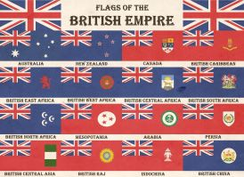

-

Conclusion: The Aftermath
As we come to the end of this essay on the British Empire, it is critical to consider the influence this enormous imperial power has had on the world. Through colonization, trade, and conquest, the British Empire grew to become the biggest empire in history. The British Empire, however, was not without its defects and difficulties since with tremendous power came enormous responsibilities. We have looked at the ways that the British Empire impacted the politics, economy, and cultures of several nations. We have seen how British imperialism's legacy continues to influence the modern globe. Millions of people are still affected by the British Empire, which left behind the wounds of imperial exploitation and tyranny as well as the English language and British legal systems. As we look to the future, it's critical to recognize the British Empire's both positive and negative effects, as well as its successes and failures, and to learn from both. The varied cultures and histories of the nations impacted by British imperialism must also be acknowledged and respected, and efforts must be made to create a more equal and just world. World history was shaped by the British Empire, a complicated and varied phenomenon. As we work to comprehend our shared history and create a more inclusive and fair future, it is a subject deserving of further investigation and contemplation.